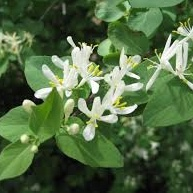

Amur Honeysuckle
About
 Amur Honeysuckle (Lonicera maackii), is a non-native shrub/bush that has become a significant concern in Ohio's ecosystems. It is prevealent all across the Eastern United States, but preferes the temperate and wet environmentts that the midwest provides. Introduced from East Asia, this invasive species has spread rapidly across the state, causing considerable environmental disruptions.
Amur honeysuckle is a low growth forest shrub, meanign that it grows on the forst floor in dense thickets. These thickets shade out native plants, killing lower to the ground plants and stopping native sapplings from getting their root. It is responsible for a drastic loss in local forest biodiversity. This rapid change also leads to a loss of habitat for native animals. In addition, Amur honeysuckle has extremely thick roots, altering the local soil composition and nutrient availability, making it hard for native plants to grow even after it has been removed.
Identification
Amur honeysuckle is a deciduous shrub and can be found in almost all forests and yards in Ohio. It can grow up to 15 feet if unchecked, and will remain the height of a small tree. It features skinny arching branches with thick, oval shaped leaves, and in the spring, produces small white or pinkish flowers that eventually produce small red berries. These flowers are edible, and are appealing to birds, squirells, and even young children. The shrub grows very densley in clusters, making travel through an infested area very difficult.